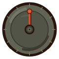

► エマージェンス ◄ EMERGENCE ►
Emergence
1
##################################
2
#############################
3
#######################################
4
################################
5
#######################
Soon
まもなく

DEFAULT